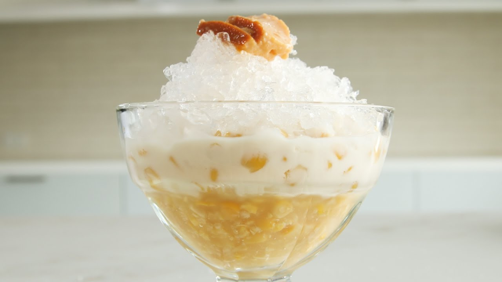

|  |
DescriptionThis dessert recipe is made by mixing whole kernel corn and the cream-style version together in a tall glass. This mais con heilo has both texture and creaminess making it a fun and tasty dessert! Ingredients1-2 cups shaved ice Procedure1. Put creamed corn into a halo halo / parfait glass. PriceP20 / serving |
||
| Previous | Next |